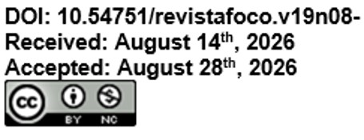

Bioremediation of Wastewater Using Microalgae: A Systematic Literature Review
Resumo
A crescente geração de águas residuais por atividades industriais, agrícolas e urbanas representa um desafio ambiental significativo. Nesse contexto, a biorremediação com microalgas surge como uma alternativa sustentável e eficiente para a remoção de nutrientes e contaminantes. Este estudo realiza uma revisão sistemática da literatura sobre o uso de Chlorella vulgaris e Scenedesmus obliquus na biorremediação de efluentes, destacando sua eficiência na remoção de compostos como nitrogênio, fósforo e metais pesados. A metodologia adotada baseou-se no Methodi Ordinatio, permitindo a seleção criteriosa dos artigos mais relevantes, publicados nos últimos cinco anos, garantindo a inclusão de estudos de maior impacto acadêmico. Os resultados indicam que consórcios microalga-bactéria podem atingir taxas de remoção de até 100% para fósforo e 91,5% para DQO, demonstrando o potencial dessas microalgas no tratamento de águas residuais industriais e agrícolas. Além disso, a biomassa gerada pode ser aproveitada para produção de biocombustíveis e biofertilizantes, contribuindo para a economia circular. A aplicabilidade industrial da biorremediação com microalgas se destaca pela viabilidade econômica e pela possibilidade de integração com sistemas de tratamento convencionais. Entretanto, desafios como a otimização das condições de cultivo e a escalabilidade do processo ainda precisam ser superados. Conclui-se que a biorremediação com microalgas representa uma solução promissora para a gestão sustentável de efluentes, combinando eficiência ambiental e geração de bioprodutos, com potencial para ampla adoção em diferentes setores industriais.
